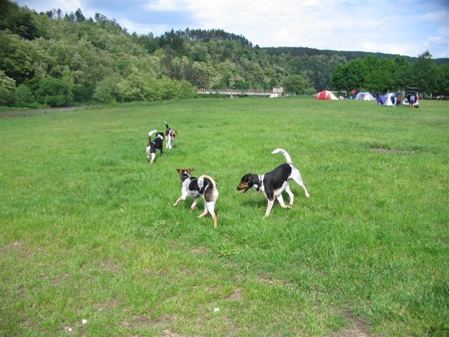
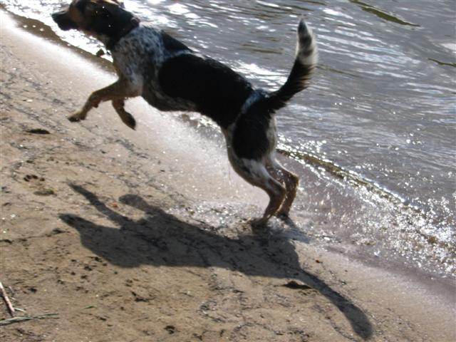
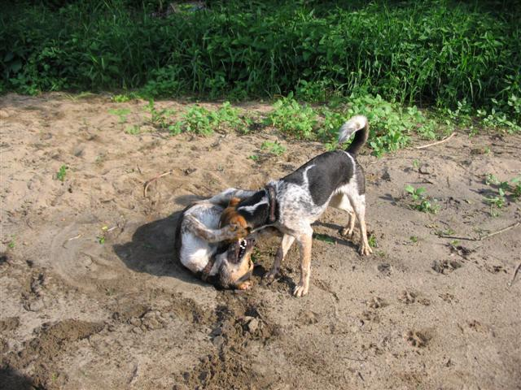
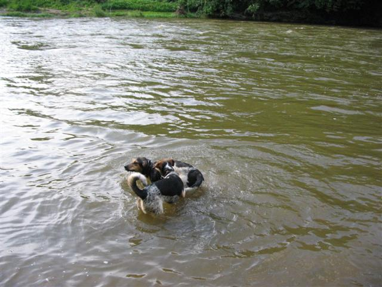
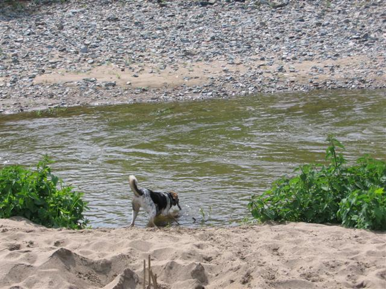
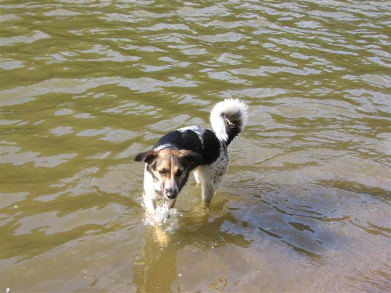
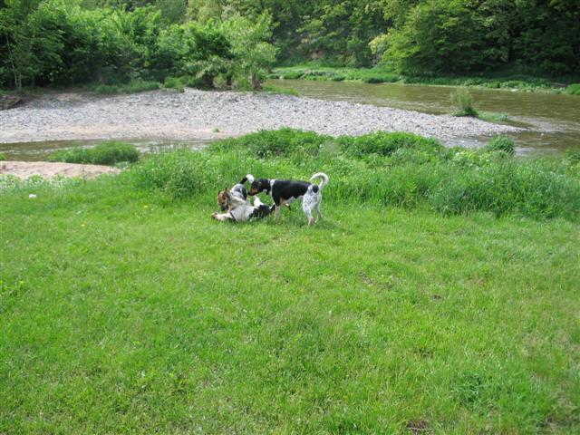

Navigace |
4.6. 2006 Strakatý sraz v PikovicíchO volební sobotě jsme s Nelou vyrazily (to tvrdé y na konci naznačuje, že Rudolf s námi nebyl) do Pikovic za dalšími strakáči (Bela, Elfík, Argo, Fin a Ford) a jejich páníčky, kteří plánovali sjíždět Sázavu. My méně ambiciózní jsme se připojily jsme jen k odpolední procházce a časně večerní hospodě.
 Dodatečně se tady ještě omlouvám všem, kterým jsem se tam nepředstavila, i když mě už možná podle Nely (malá smradlavá bitkařka) příště nejspíš poznáte. Dali jsme si příjemnou procházku podél Sázavy, během níž se psi nejen vyblbli, vymáchali a proběhli, ale někteří (včetně Nely, samozřejmě), i vyváleli v močůvce. Hojný lidský doprovod strakaté smečky si cestou povídal, byť konverzace byla omezena na páry, neboť stezka byla úzká.
Potom jsme ještě chvíli poseděli před stany. Všechny nezavřené Nela stihla prolustrovat a také se pokusila o průnik malou škvírou do stanu za Zuzkou a Belou, dokud se v té škvíře neobjevily Beliny „protizuby“, že už má té drzosti dost. Taky jsem zjistila, že si budeme muset pořídit kolík do země, protože nápad přivázat Nelu k baťohu, aby chvilku počkala nebyl dobrý. Ani váha baťohu ji neodradila od toho, aby se za mnou rozběhla. Z hospody jsme se od ostatních strakáčů a jejich páníčků vzdálily již v devět, protože na rozdíl od ostatních jsme nepřespávaly v kempu (do toho samotná nepůjdu a počkám si, až bude mít Rudolf volno), ale vracely jsme se do Prahy. Trochu jsem se bála, aby nás do vlaku vůbec vzali, protože Nelin močůvkový odér byl velmi odolný. Ani dvojí koupel v řece, kterou Nela chápala jako dost divnou hru, ani drbání hřbetu jehličím, pískem a travou jej nezdolalo. Přiznávám se, že ještě po cestě na vlak jsem zkoušela, jestli by to nepřemohly květy akátů..neúspěšně. Doma jsem ji podrobila důkladnému šampónování, jež zabralo na mrtvou kočku, ovšem tentokrát nikoli. Přece jen se od Nely vinula jistá charakteristická vůně, kterou jsem pro únavu nás obou akceptovala, i když byla mnohem přírodnější, než to, co se line z osvěžovačů vzduchu.  Nela rozmázle, leč dynamicky.  Řádění s Finem tentokrát na písečné pláži.  ...a ve vodě  Nela se brodí Sázavou pro klacík.  Bela se brodí decentně.  A ještě jedna řádící. Fin je na zemi, nad ním Nela a Argo pokukuje.
|